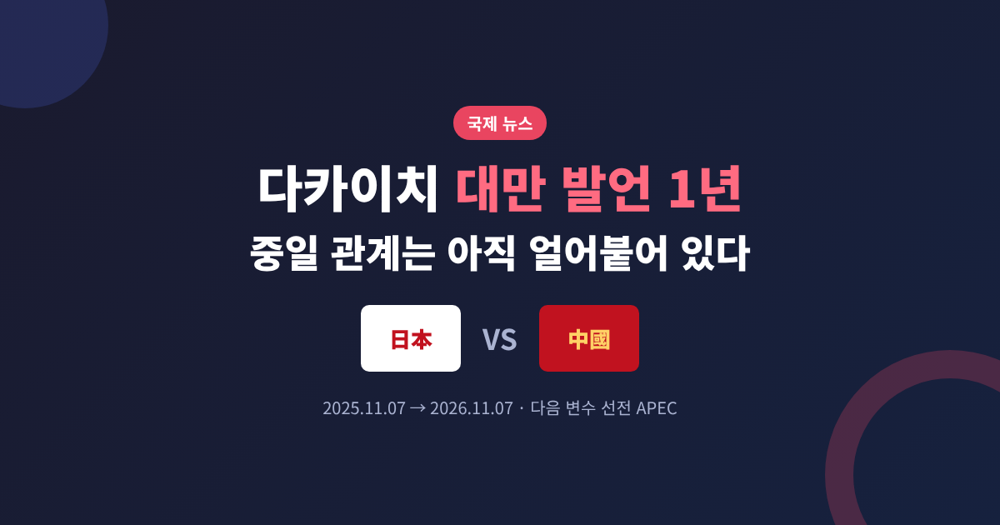
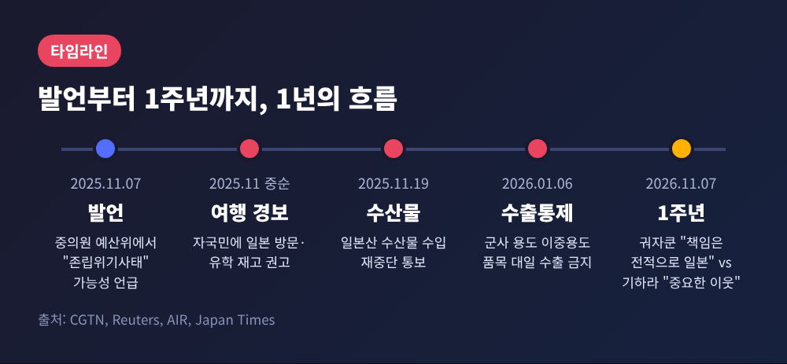
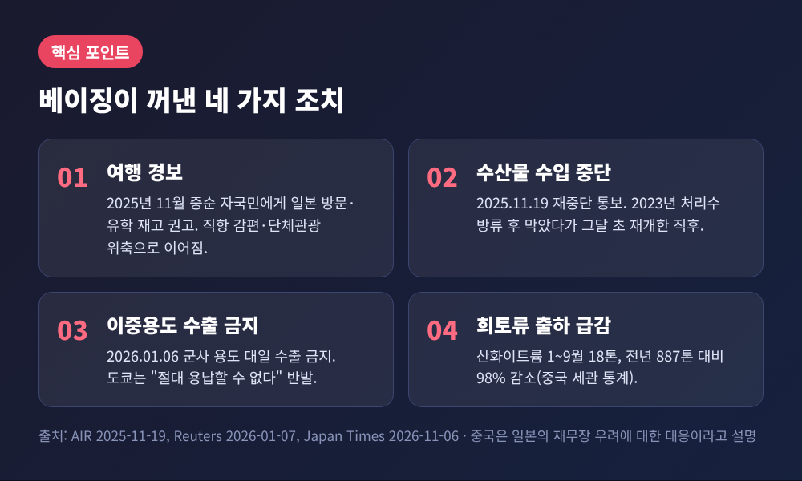
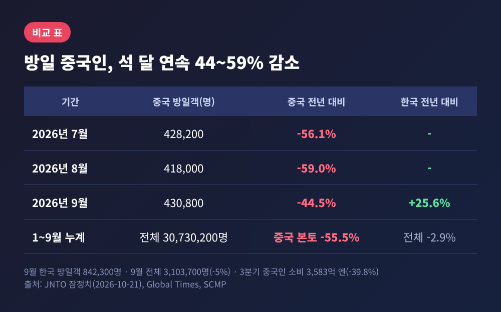
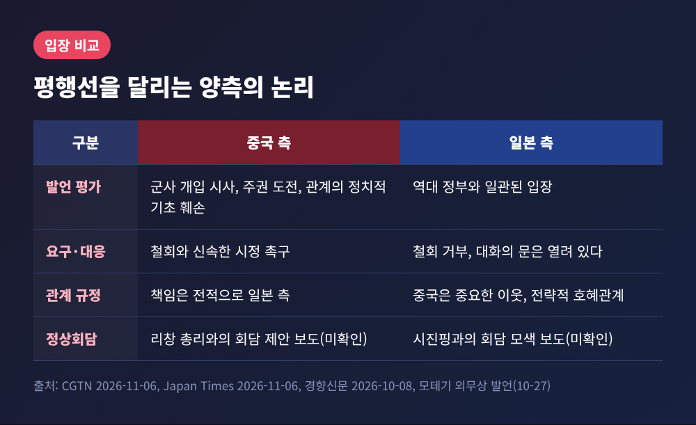
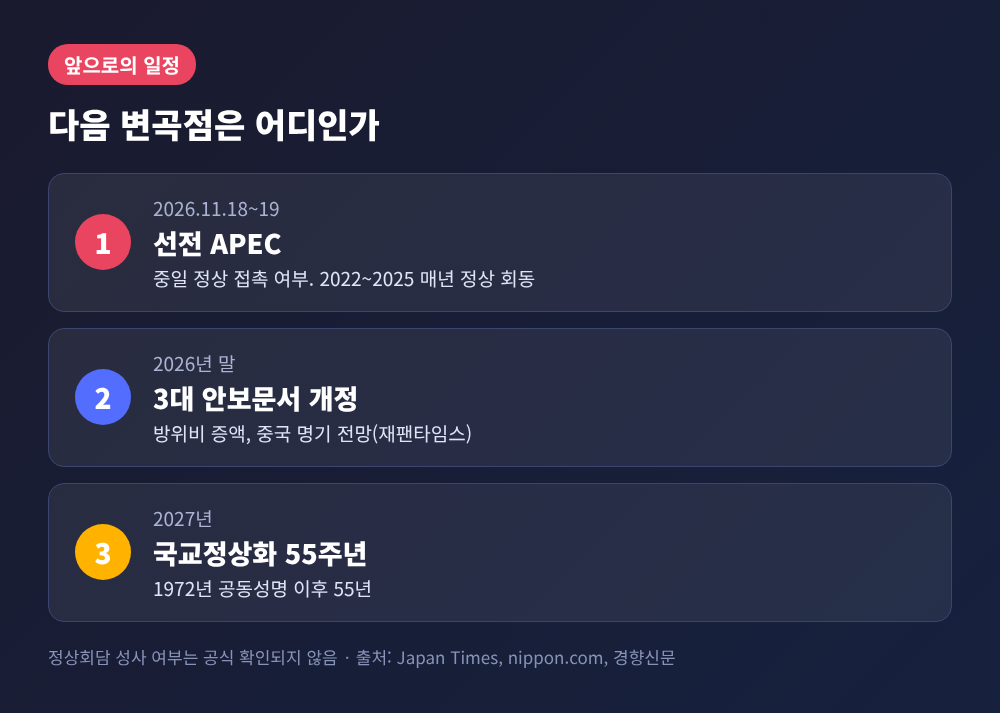

이번 글에서는 다카이치 사나에 일본 총리의 대만 발언이 나온 지 1년을 맞은 중일 관계를 정리해 보겠습니다. 베이징의 압박은 어디까지 왔고, 도쿄는 어떻게 맞서 왔는지, 그리고 이달 18일 시작되는 선전 APEC이 변곡점이 될 수 있는지 살펴봅니다.
세 줄 요약

시작은 2025년 11월 7일 일본 중의원 예산위원회였습니다. 다카이치 총리는 중국 해군이 무력을 동반해 대만을 봉쇄하는 경우를 "존립위기사태"가 될 수 있다고 답했습니다. 존립위기사태는 자위대가 집단적 자위권을 행사할 수 있는 유일한 법적 요건입니다.
재팬타임스에 따르면 현직 총리가 대만해협 유사시 대응을 이렇게 구체적으로 언급한 것은 처음이었습니다.
1주년 전날인 11월 6일, 중국 외교부 궈자쿤 대변인은 정례브리핑에서 이렇게 말했습니다. "중일 관계가 심각한 어려움에 직면해 있으며 책임은 전적으로 일본 측에 있다." 도쿄가 1년이 지나도 "여전히 시간을 끌고 있다"고도 했습니다.
같은 날 기하라 미노루 관방장관은 중국이 "중요한 이웃"이며 "전략적 호혜관계"를 추진한다는 방침을 밝혔습니다. 다카이치 총리 역시 대만 정책은 역대 정부와 일관되고 대화의 문은 열려 있다는 입장입니다.
예전엔 철회 여부가 쟁점이었습니다. 지금은 누가 먼저 물러서느냐의 문제가 되었습니다.

베이징이 취한 조치는 여러 갈래입니다. 시간순으로 보면 이렇습니다.
첫째, 여행 경보입니다. 2025년 11월 중순 자국민에게 일본 방문과 유학을 재고하라고 권고했습니다.
둘째, 수산물입니다. 2025년 11월 19일 일본산 수산물 수입을 다시 중단한다고 통보했습니다. 2023년 후쿠시마 처리수 방류 이후 막았던 수입을 그달 초 재개한 직후였습니다.
셋째, 수출통제입니다. 2026년 1월 6일 군사 용도와 일본의 군사력 강화에 기여하는 이중용도 품목의 대일 수출을 금지했습니다. 기하라 관방장관은 "절대 용납할 수 없다"고 반발했습니다. 희토류 수입의 약 60%는 중국에 기대고 있는 처지입니다.
넷째, 희토류 통계입니다. 현지 세관 자료로 2026년 1~9월 일본향 산화이트륨 수출은 18톤으로, 1년 전 887톤에서 98% 줄었습니다. 디스프로슘과 터븀 산화물 출하는 거의 멈췄다고 일본 매체는 전합니다.
닛케이는 여기에 현지 애니메이션 상영과 일본 가수 공연 취소를 더해 "사실상의 일본 금지령"이라고 표현했습니다. 5월에는 다롄에서 후지전기 직원 2명이 구금됐다고 닛케이가 보도했으며, 이 건은 단일 출처입니다.
베이징은 이런 조치를 일본의 재무장 움직임에 대한 대응으로 설명합니다. 도쿄는 자국만 겨냥한 조치이자 국제 관행에서 벗어난다고 비판합니다.

가장 뚜렷하게 드러나는 것은 관광입니다. 일본정부관광국(JNTO) 잠정치로 2026년 9월 방일 외국인은 310만 3,700명으로 5% 줄었습니다. 이 가운데 중국인은 43만 800명으로 44.5% 감소했습니다. 반대로 한국인은 84만 2,300명으로 25.6% 늘었습니다.
1~9월 중국 본토 방일객 감소폭은 55.5%에 이릅니다. 3분기 중국인 소비액도 3,583억 엔으로 39.8% 줄었다고 일본 관광청 자료를 인용해 글로벌타임스가 전했습니다.
원인으로는 여행 경보 외에 직항 감편, 비자 비용 상승, 단체관광 위축이 꼽힙니다. 한 항공·여행 분석가는 경보가 유지되는 동안 여행사가 단체 상품을 꺼린다고 설명했습니다.
다만 관광 수요 전체가 무너진 것은 아닙니다. 1~9월 누계는 3,073만 명으로 2.9% 감소에 그쳤습니다. 한국, 대만, 홍콩 등이 빈자리를 일부 메웠습니다.
산업계의 시선은 엇갈립니다. PwC 재팬의 10월 조사에서 중국 사업을 유지하겠다는 기업은 49%로 1년 전 39%보다 늘었습니다. 생산·조달 이전을 검토한다는 응답은 23%로 26%에서 소폭 줄었습니다. 일본무역진흥기구(JETRO)의 한 분석가는 "민간은 중국에 등을 돌릴 수 없다"고 말했습니다. 반면 도쿄재단의 커룽 경제학자는 중국의 규제가 일본의 공급망 다변화를 오히려 앞당길 수 있다고 내다봤습니다.

양쪽의 논리는 평행선입니다.
베이징은 발언이 군사 개입 가능성을 시사하고 주권에 도전하며 양국 관계의 정치적 기초를 흔들었다고 봅니다. 철회와 시정이 선행되어야 한다는 것입니다. 도쿄는 발언이 정부의 기존 입장과 다르지 않다며 철회를 거부하되, 1972년 공동성명 등 4개 정치문서의 하나의 중국 입장을 존중한다고 밝혀 왔습니다. 모테기 도시미쓰 외무상은 10월 27일 국회에서 그렇게 말했습니다.
외부 변수도 있습니다. 보도에 따르면 9월 미중 워싱턴 정상회담에서 트럼프 대통령이 시진핑 주석에게 다카이치 총리와 대화하라고 촉구했습니다. 시 주석은 중일 관계와 미중 관계를 분리해야 한다는 취지로 답했다고 전해집니다. 닛케이는 트럼프 대통령이 도쿄를 거치지 않고 베이징과 직접 거래를 모색하면서 미국의 외교적 뒷받침에 한계가 드러났다고 평가했습니다.
국내 정치로는 올해 2월 총선에서 다카이치 정부가 압승했습니다. 닛케이는 이것이 타협을 더 어렵게 만든다고 진단했습니다. 와세다대 아오야마 루미 교수는 베이징의 강경책이 일부는 일본의 방위 계획을 견제하려는 목적이라면서도, 경제 압박과 반일 서사는 "성과가 적었다"고 평가했습니다.
한편 9월 말 이와야 다케시 전 외무상이 왕이 외교부장 등을 만났습니다. 발언 이후 첫 고위급 접촉이지만, 간접적인 철회 요청은 받아들여지지 않았다고 경향신문은 전했습니다.

당장의 시험대는 11월 18~19일 선전 APEC입니다. 2022년부터 2025년까지 APEC에서 중일 정상은 해마다 만났습니다. 모테기 외무상은 다카이치 총리가 참석을 조율 중이라고 밝혔습니다.
다만 회담 성사 여부는 불투명합니다. 도쿄가 시 주석과의 회담을 모색하는 반면, 베이징은 리창 총리와의 회담을 제안했고 도쿄가 난색을 보인다는 보도가 있습니다. 이는 SCMP 보도를 재인용한 내용으로 양국 정부가 공식 확인하지는 않았습니다. 정부 대변인은 가능성에 언급을 피했습니다. 커룽 경제학자는 정상회담 가능성이 낮다고 봅니다.
두 번째는 연말입니다. 일본은 3대 안보문서 개정을 2026년 말까지 마무리할 예정입니다. 원래 2027년 계획이었으나 앞당겼습니다. 방위비 증액과 중국을 최대 전략 과제로 명기하는 내용이 예상된다고 재팬타임스는 전합니다. 새 지출 목표는 확인되지 않았습니다. 이 내용이 베이징을 자극할지, 아니면 대화 압력으로 작용할지는 지켜봐야 합니다.
역사적 선례도 참고가 됩니다. 2012년 센카쿠 국유화로 틀어진 중일 관계에서 아베 전 총리와 시 주석의 회담은 2014년 11월 베이징 APEC에서 성사됐고, 갈등이 시작된 지 약 2년 6개월 뒤였습니다. 이번에도 같은 속도로 풀린다고 단정할 근거는 없습니다.
정리하면 이렇습니다. 1년 동안 달라진 것은 압박의 규모이고, 달라지지 않은 것은 양측의 문장입니다.
철회가 먼저라는 쪽과 입장은 그대로이되 대화는 열려 있다는 쪽이 만나는 지점을 찾을 수 있을지가 관건입니다. 내년 국교정상화 55주년을 앞두고 선전에서 어떤 장면이 나올지, 이번 달 18일 이후에 다시 정리해 보겠습니다.
※ 이 글은 2026년 11월 9일까지 보도된 내용을 바탕으로 하며, 수치는 JNTO 잠정치와 각 매체 보도를 따랐습니다. 중국 측과 일본 측 설명이 다른 부분은 각각 출처를 병기했습니다.